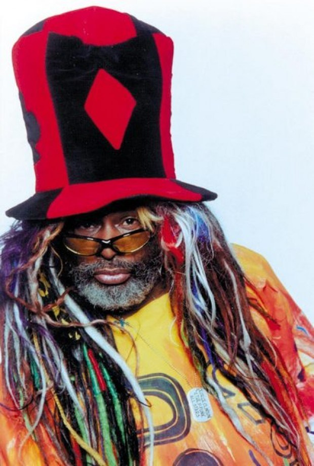

Once I heard Flight-Time by Donald Byrd it all started to make sense. A pioneer of Jazz-Funk, here I found a bridge to music that was a direct influence to some of my favorite music as a kid. I'm also a sucker for a solid base line found in the combination of three elements. The three elements also showed me that "Evil" was the perfect concoction of influences.
